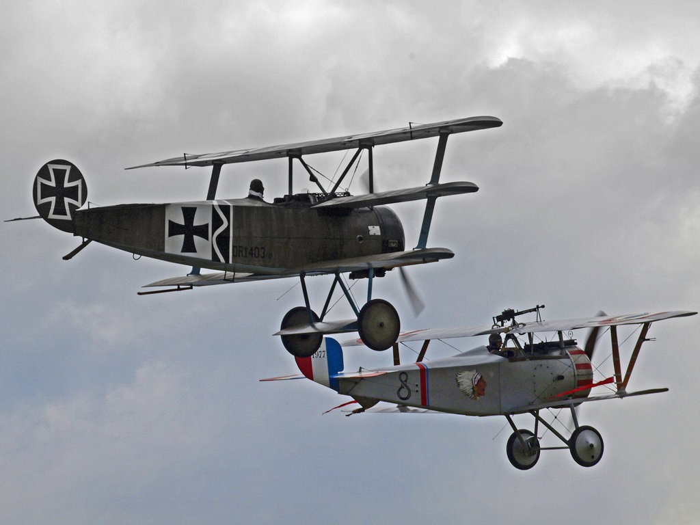
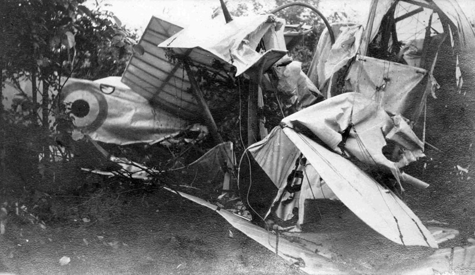
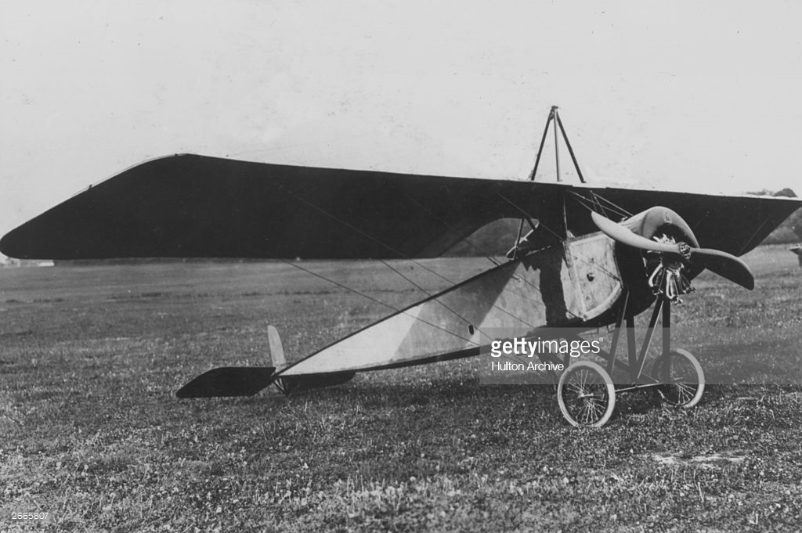
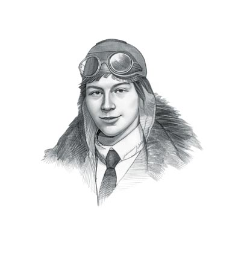
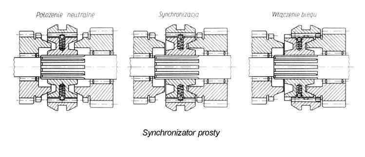
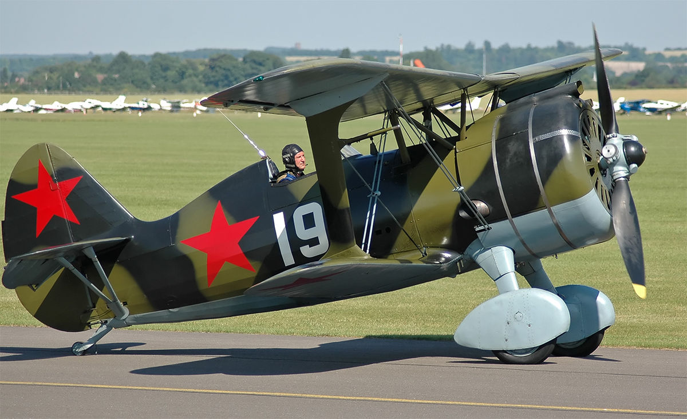
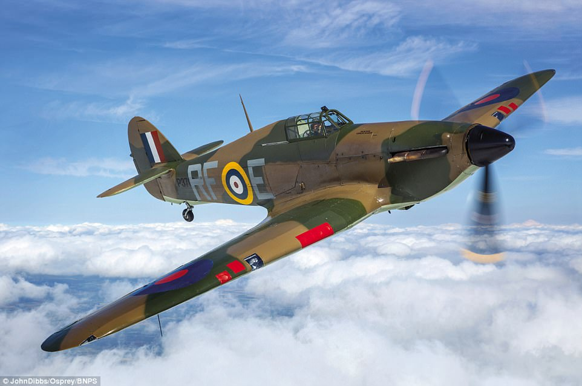
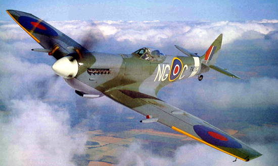

Wszystko zaczęło się od I Wojny Światowej

Walki powietrzne mają swe korzenie w spotkaniach samolotów zwiadowczych przeciwnych stron walczących na początku I wojny światowej. Spotkania takie miały najpierw charakter pokojowy i kończyły się zazwyczaj pozdrowieniem, pomachaniem skrzydłami, wkrótce jednak przeistoczyły się one w próby wzajemnego strącania przeciwnika.
Pierwsza walka samolotów odbyła się 8 września 1914 koło Żółkwi. Rosyjski pilot Piotr Niestierow staranował austriacki samolot rozpoznawczy. W wyniku ataku samoloty rozbiły się, a załogi zginęły.

Pierwsze sposoby niszczenia wrogich samolotów polegały na użyciu lin zakończonych kotwicami, którymi próbowano zaczepić nieprzyjacielską maszynę. Używano też broni ręcznej takiej jak rewolwery, karabiny powtarzalne oraz granaty. W momencie, gdy dowództwa walczących stron zdały sobie sprawę ze znaczenia zwiadu powietrznego przeprowadzanego przez samoloty i sterowce, zrozumiano, jak ważną kwestią jest jednoczesne uniemożliwienie nieprzyjacielowi zdobywania analogicznych informacji.
Pierwszym rozwiązaniem służącym niszczeniu wrogich samolotów rozpoznawczych były maszyny z zainstalowanym na obrotnicy karabinem maszynowym obsługiwanym z tylnego stanowiska obserwacyjnego albo karabinem zamocowanym na górnym płacie powyżej linii śmigła. Choć karabiny montowane na górnym płacie były bardzo użyteczne w maszynach jednomiejscowych to nastręczały dużych trudności w celowaniu i przeładowywaniu, a największym problemem było strzelanie przez płaszczyznę śmigła, tak aby go nie uszkodzić. Pierwszą maszyną z karabinem strzelającym przez śmigło był francuski samolot Morane-Saulnier L,

w którym pionier francuskiego lotnictwa Roland Garros zastosował własne rozwiązanie polegające na zainstalowaniu na łopatach śmigła stalowych klinów odbijających uderzające w nie pociski. Choć nie było to rozwiązanie idealne, to skuteczność tego myśliwca była znacznie większa niż innych maszyn. Rozwiązanie Garrosa dostało się w ręce Niemców po zestrzeleniu jego maszyny poza linią frontu; wkrótce jednak Anton Fokker

zainspirowany urządzeniem skonstruowanym w 1913 przez szwajcarskiego inżyniera Franza Schneidera, zbudował bardziej niezawodny system strzelania – synchronizator – 
umożliwiający oddawanie strzałów bez możliwości uszkodzenia śmigła.
Okres międzywojenny
Tempo rozwoju myśliwców spadło w okresie międzywojennym, a najważniejszym osiągnięciem tamtych czasów w budowie samolotów było przejście z konstrukcji drewnianych krytych płótnem dwupłatów na metalowe skorupowe jednopłatowce. Pojawiły się myśliwce dwusilnikowe, które niekiedy nazywano ciężkimi. Do połowy lat 30 nierozwiązana była kwestia zwrotności i prędkości myśliwców. Projektowano zatem dwa typy maszyn – maszyny szybkie („pościgowe”), w układzie jednopłata (najczęściej to dolnopłat) i myśliwce w układzie dwupłata (lub półtorapłata) posiadające korzystniejsze cechy w walce kołowej. Typowym przykładem jest konstrukcja Polikarpowa I-15. 
Głównym problemem takiego podziału był brak silnika o odpowiednio dużej mocy. Pojawiające się pod koniec lat 30 samoloty jednopłatowe z mocnymi silnikami (np. Hurricane, Spitfire),


posiadające chowane podwozie i śmigła o zmiennym skoku usunęły ten podział. Głównym bodźcem rozwoju samolotów myśliwskich w czasie pokoju nie były cele wojskowe, ale chęć osiągania dobrych wyników w cywilnych rajdach samolotowych. Dzięki tym rajdom zatem pojawiły się maszyny bardziej aerodynamiczne, napędzane mocniejszymi, chłodzonymi cieczą silnikami, które były podstawą przyszłych myśliwców II wojny światowej.
"Aim High ... Fly-Fight-Win"
-motto USAF
Szymon Korbiel © 2018 - All Rights Reserved - ZSE Kraków